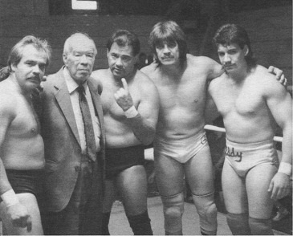
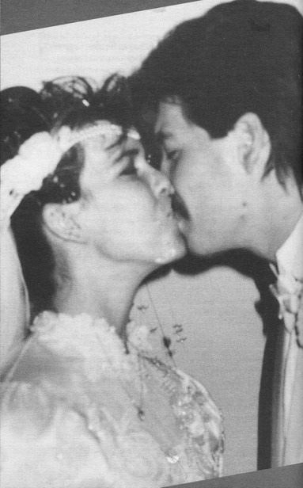

Книги
КнигиГлава 7
Перевод Александра Суменко для VSplanet.net
Жизнь в Мехико не доставляла мне радости, поэтому я решил отправиться домой в Эль-Пасо. Я знал, что для меня найдется работа в Хуаресе и других территориях, например, в Тихуане.
Однажды вечером я зависал с Майком Ландой, моим приятелем из школьного ансамбля. Он сходил с ума от девушки по имени Тина и попросил меня составить ему компанию на двойном свидании с ней и ее соседкой, Викки Ларой. Я не любитель свиданий вслепую, но Майк был моим другом, и я ответил: «Конечно, почему бы и нет?»
Я быстро отметил аппетитный зад и ножки Викки — она мне сразу понравилась. Но дело было не только в том, что она показалась мне привлекательной. У нее был очаровательная улыбка, а ее глаза были полны жизни.
Мы все отправились в клуб, и мы с Викки протанцевали всю ночь. Под утро мы вышли из клуба и обменялись номерами. Когда я целовал ее на прощание, я не смог удержаться — опустил руку и потрогал ее попу. Ничего серьезного, просто легкое касание. Но этого было достаточно. Я попался на крючок.
Викки жила в Хорайзон Сити, пригороде к востоку от Эль-Пасо. Ее часть города была менее индустриализованной, чем моя. Она привыкла встречаться с деревенскими парнями, настоящими техасцами в ковбойских шляпах. Я же был их прямой противоположностью. Я никогда не надевал ковбойскую одежду. Я ненавижу этот отстой. Я был городским парнем: джинсы, ботинки и облегающая футболка, демонстрирующая мои бицепсы.
Почему-то Викки и я сошлись. Возможно, у нас не было много общего, но на первой же встрече между нами пробежала искра.
Мы с Викки начали встречаться, но я не мог перестать быть плохим парнем. Я был еще молод и не готов остепениться. В рестлинге существует многолетняя традиция: что происходит в дороге, остается в дороге. Я много веселился, и на каждом шагу меня поджидали соблазны.
Я не вел себя настолько плохо, насколько мог бы. Я встречался с другими девушками, наверное, два или три раза. Но это не оправдывает моих поступков — я изменял.
Однажды брат Мандо позвонил мне и попросил поработать с ним на шоу AWA в Калифорнии. Мои глаза загорелись. «Ну, конечно!»
К несчастью, я уже был заявлен на еженедельное шоу по четвергам в Хуаресе. Я решил забить на него и отправиться в Калифорнию. Но когда я вернулся в Эль-Пасо, отец сообщил мне плохие новости.
— Ты не можешь вернуться в Хуарес, — сказал он. — Мексиканские федералы ищут тебя.
Оказалось, что одна из фанаток рестлинга, крутившаяся возле Хуареса, забеременела. Более того, выяснилось, что она была несовершеннолетней. Был подан иск, обвинявший пятерых рестлеров в изнасиловании несовершеннолетней, и среди обвиняемых фигурировало мое имя. Поскольку из пятерых американцем был только я, федералы решили начать мое преследование.
В Мексике закон работает не так, как в Штатах. Там вы виновны, пока не доказано обратное. А при таких обвинениях сама ваша жизнь будет под угрозой. Вас посадят в тюрьму, а потом скажут, что вы пропали там без вести.
Папа считал, что лучше всего для меня будет удариться в бега. В Эль-Пасо было небезопасно — ничто не мешало федералам засунуть меня в багажник и перевезти через границу. Мой брат Эктор работал в то время в Smoky Mountain Wrestling, вот мы и решили, что мне нужно пожить с ним в Теннесси.
Следующие пять месяцев открыли мне глаза на многое. Я никогда еще не жил в городе, в котором не было большом латиноамериканской диаспоры. Я был изолирован от того, как люди в остальном мире относятся к представителям испаноязычного населения. В Теннесси я впервые испытал расизм на себе.
Я чувствовал ненависть, просто заходя в рестораны. Люди смотрели на меня с отвращением, словно я был заразен. Скажу я вам, это ранит. Ты начинаешь думать: «Что со мной не так?» И в то же время начинаешь злиться.
Из-за моей светлой кожи люди не могли угадать мое происхождение:
— Ты кто, итальянец?
— Нет, я из Мексики.
— Ты слишком белый для мексиканца.
Такого со мной еще не бывало. Живя в Эль-Пасо, я был защищен от того, как люди обходятся с моими соотечественниками. Если бы я вырос в другом месте, я, наверное, испытал бы на себе такое обращение гораздо раньше.
Такое отношение расстраивало меня, но не разожгло во мне огонь. Это случилось позднее.

Семья Герреро
В остальном, мне понравилось скрываться в Теннесси. Я работал с Эктором при каждом удобном случае, набираясь опыта с каждым новым шоу. Пока я работал там, меня пригласили на домашнее шоу WCW сделать джоб Терри Фанку. Я был в восторге, и не только потому что меня позвали в WCW, но и потому что мне открывалась возможность побывать на ринге с одним из величайших представителей этого бизнеса. Многих называют легендами, но Терри Фанк был самой настоящей легендой.
Но Эктор не хотел меня отпускать. Он повторял мне одно из главных правил отца: «Никогда не соглашайся на односторонний джоб. Оно того не стоит». Но я продолжал упрямиться. Я видел в этом возможность помелькать на глазах у букеров WCW, полагая, что если им понравится увиденное, я могу получить предложение о постоянной работе.
Я позвонил папе и рассказал о своих сомнениях. Как всегда, он сохранил спокойствие. Он не пытался отговорить меня. Вместо этого, он объяснил мне, что существуют и другие пути, при которых я не буду выглядеть плохо. Односторонний джоб еще не означает, что я буду выглядеть полным лузером.
Но уже прибыв на арену проведения шоу, я стал корить себя за то, что принял неправильное решение. Я поделился своими мыслями с Терри, и он отреагировал великолепно. «Не волнуйся, сынок, — сказал он. — Это не будет односторонний джоб. Я помогу тебе выглядеть хорошо».
Это придало мне уверенности в своих силах. Вместо боязни я намеревался продемонстрировать все, что умею. Я уже не хотел впечатлить боссов, теперь я хотел оправдать доверие Терри.
Он был великолепен. Он позволил мне провести много атак. Также я провел несколько «высоких спотов»: я свалил его с ног хураканраной, потом он поймал меня, когда я делал сплэш с верхнего каната. Такие приемы вообще не исполнялись в WCW в то время. Потом я слышал, что букеры были под впечатлением, но не решились дать мне еще шанс из-за моих размеров.
Прячась в Теннесси, я с удивлением для себя обнаружил, что скучаю по Викки. Она узнала о моих плохих делах, когда федералы взялись меня разыскивать. Я честно поговорил с ней, она разозлилась и бросила меня. Я не мог винить ее, но мне больно от этого до сих пор.
Все время, проведенное в бегах, я не мог забыть ее. Раньше я такого не испытывал. «Подожди-ка, — понял я в один прекрасный момент. — Да я влюблен».
В конце концов, отец разобрался с моей ситуацией в Хуаресе. Проще говоря, он раскрыл блеф той девушки. Он знал, что она ищет легкие деньги, поэтому он слегка подмазал ее и власти, и дело было закрыто. Когда с этим разобрались, организация, на которую я работал в Хуаресе, пригласила меня вернуться.
В первую очередь, вернувшись домой, я позвонил Викки и попытался уговорить ее встретиться со мной. Медленно, но верно я возвращал ее доверие. Я больше не изменял ей. Я выучил свой урок.

Эдди Герреро и Викки Герреро